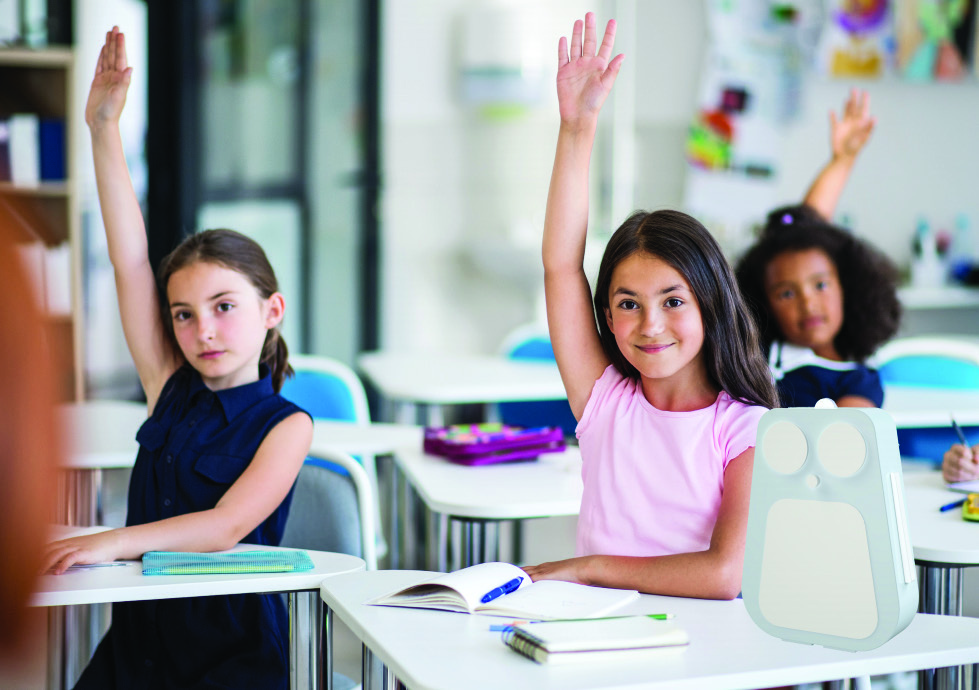
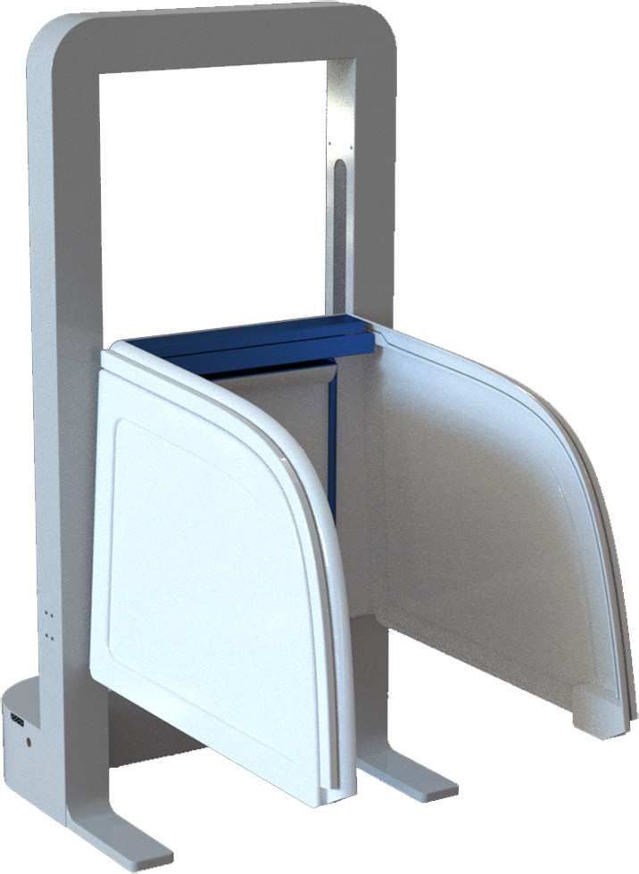
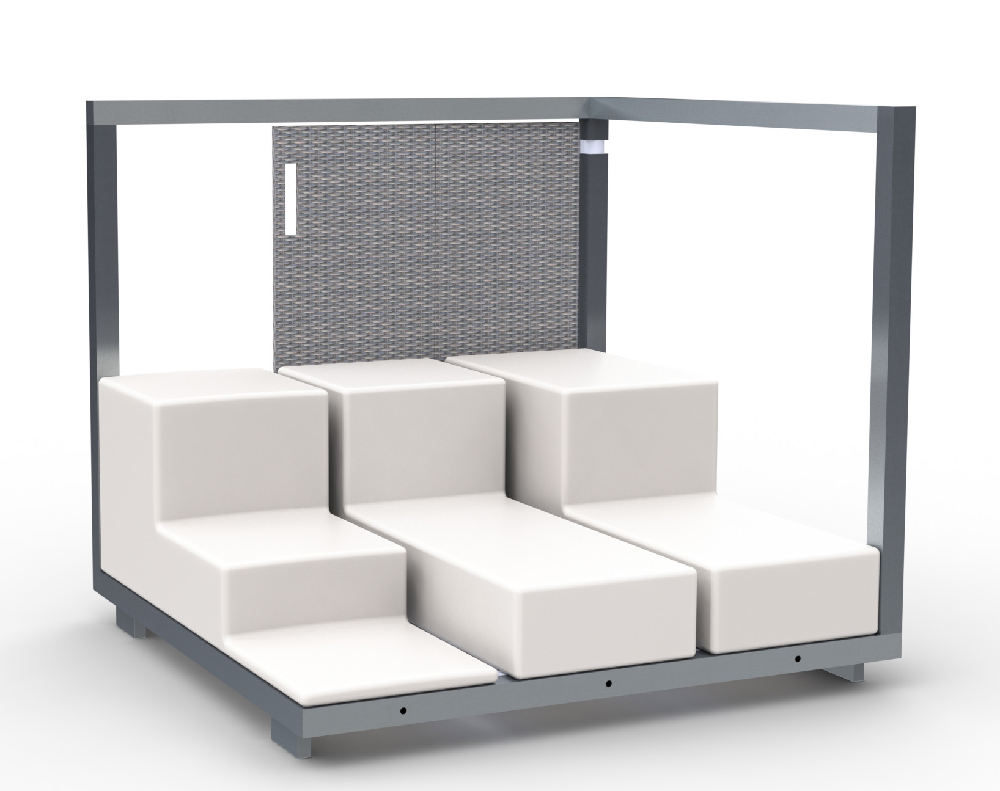
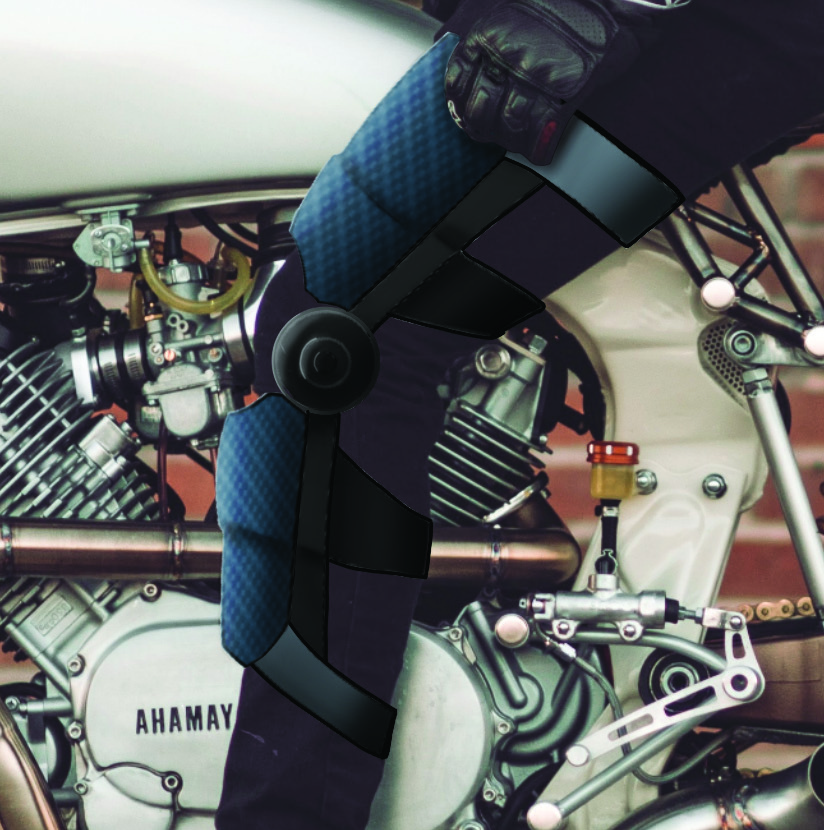

Design Toolset
The skills this degree gave me — the part that still feeds my engineering work today.

"Skoopy" — Interactive Telepresence Device
UX Group Project
An interactive product that remotely connects a sick child at home with their classroom. Using an on-screen interface, a camera, speakers, and an LED light, we designed playful interactions that help the child feel present and connected with their class.

Accessible Photobooth — Redesign
Group Project
A detailed redesign of an existing photobooth to make it wheelchair-accessible, with a booth that can raise and lower to the user. A technical, structural challenge that required rethinking the product down to the smallest mechanical detail.

Bachelor's Thesis — Modular Rooftop Furniture
Solo Project
A configurable seating system for public rooftop terraces, seating at least six people in any layout the buyer composes. It features an unfolding windscreen that rotates 270° to follow the wind. Designed down to the manufacturing details, considering every step of the design and production process.

"Embrace" — Smart Knee Brace
Group Project
A project tackling the stigma around wearing a knee brace by giving it new "superpowers". The e-textile brace lets the wearer monitor their heart rate, track recovery progress, and project messages sent from their phone onto the brace — turning a medical device into something to be proud of.